Animation Scripts
Write your own animations for the LED wall. A script is a short Python file: tell it what color each pixel should be, or draw shapes, text and particles on a canvas. It runs live on the wall, and sliders let you tweak it without touching the code.
What you can make
These all come with the app (Add → Script..., under Examples). Each one is a single file you can open, read and change. They are commented so you can learn from them.
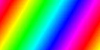
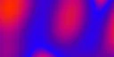
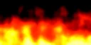
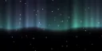
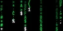
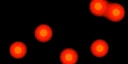
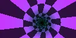
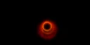
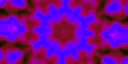
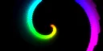
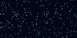
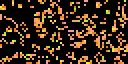
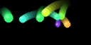
Live data and games
Scripts can show information from the internet and from games, updating by themselves. See Live data and Games and game servers.
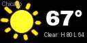
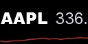
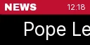
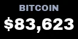
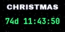
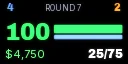
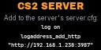
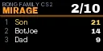
Getting started
Play an example
- In the playlist click Add → Script...
- Pick a script on the left. The preview shows it running at your display's size.
- Change its Settings (sliders, colors, choices); the preview follows right away.
- Click OK. The script is now a playlist item. Like a picture it plays for Image s seconds; set Repeat to Loop current to keep it on the wall.
Right-click a script item in the playlist for Edit... (settings) and Edit code....
Make your own
- In the Script window click New script... and give it a name. A small starter script is created in My scripts and the editor opens.
- Change something and press Ctrl+S (Cmd+S on a Mac). The preview (and the wall, if it's playing) picks up the change at once; no need to restart anything.
- If there's a mistake the editor shows the line in red and says what's wrong. The wall keeps the last good picture, dimmed with a red edge, until you fix it.
Your first script
A script that colors the whole wall red:
def pixel(x, y, t):
return redpixel is asked for a color for every pixel, every frame. x goes from 0 (left) to 1
(right), y from 0 (top) to 1 (bottom), and t is the time in seconds. Now use them:
def pixel(x, y, t):
return hsv(x, 1, 1) # hue follows x: a rainbow from left to righthsv(hue, saturation, brightness) makes a color; the hue goes round the rainbow from 0 to 1.
Add time to make it move:
def pixel(x, y, t):
return hsv(x - t * 0.2, 1, 1) # slides along, one full rainbow every 5 secondsGive it a slider so you can change the speed without editing:
"""Moving rainbow
My first script.
"""
params = {
"speed": slider(0.2, 0.05, 2.0),
}
def pixel(x, y, t):
return hsv(x - t * speed, 1, 1)The text in """ at the top is the name and description shown in the script list.
speed is now a slider on the item, and inside the script it's just a number.
pixel() or frame()?
A script needs at least one of these two functions:
pixel(x, y, t) | frame(c, t) | |
|---|---|---|
| What it does | Returns a color for every pixel, worked out from position and time | Draws on a canvas c: shapes, text, dots, effects |
| Good for | Patterns, gradients, plasma, tunnels, waves, noise | Things that move around: balls, particles, text, sprites; anything with trails |
| Picture between frames | Starts fresh each frame | Stays until you clear or fade it |
| Examples | Rainbow wave, Plasma, Lava lamp, Tunnel | Fireworks, Swirl, Bouncing balls, Code rain |
You can have both: pixel paints the background first, then frame draws on top.
And setup(c), if you write one, runs once when the item starts (see
Remembering things).
def frame(c, t):
c.fade(0.8) # darken what was there: short trails
x = c.w / 2 + sin(t * 2) * c.w * 0.4 # swing left and right
c.circle(x, c.h / 2, c.h * 0.2, hsv(t * 0.1)) # a ball that changes colorPosition and time
| Name | Meaning |
|---|---|
x, y (in pixel) | 0..1 across and down the display (0, 0 is the top left) |
c.w, c.h | Width and height in pixels. W and H are the same numbers. |
aspect | W / H, e.g. 2 for a 256 x 128 wall. Multiply x by it to keep circles round in pixel. |
t | Seconds since the item started (smooth, independent of the frame rate) |
c.dt | Seconds since the last frame; use it for movement: pos += speed * c.dt |
c.frame | Frame counter, 0, 1, 2 ... |
In frame() drawing works in pixels: c.circle(10, 5, 3) is 10 pixels from the left,
5 down. Positions don't have to be whole numbers; in-between values are drawn smoothly, so slow movement
glides instead of jumping a pixel at a time.
c.w and c.h
(c.h * 0.2) rather than fixed pixel numbers and your script will look right on a 64 x 32 panel
and on a 512 x 256 wall.Colors and palettes
Anywhere a color is wanted you can write it any of these ways:
| Write | Means |
|---|---|
red, "orange" | Named colors: black, white, red, green, blue, yellow, cyan, magenta, orange, purple, pink, warm_white, gray |
"#ff0080" | Hex, like on web pages |
(1, 0, 0.5) | Red, green, blue from 0 to 1 |
rgb(255, 0, 128) | Red, green, blue from 0 to 255 |
hsv(h, s, v) | Hue 0..1 (wraps round), saturation, brightness |
palette("fire", k) | Color at position k (0..1, wraps) along a palette |
mix(a, b, k) | Blend from color a (k = 0) to color b (k = 1) |
Built-in palettes for palette(name, k):
rainbowfirelavaoceanforestpartysunseticeneoncandyA palette setting the user can choose: "colors": dropdown(*PALETTES), then
palette(colors, k). To make your own palette add it to PALETTES at the top of your
script:
PALETTES["halloween"] = [(0, "#000000"), (0.4, "#ff6000"), (0.7, "#8000ff"), (1, "#000000")]Drawing
All of these are used in frame(c, t) as c.something(...). Shapes are drawn smooth
(anti-aliased). Most take two optional extras: alpha= (0..1, see-through) and
blend=: "normal" (paint over), "add" (light adds up, like overlapping
spotlights) or "max" (keep the brighter of old and new).
| Call | What it does |
|---|---|
c.clear(color) | Fill everything (default black). c.fill is the same. |
c.fade(0.85) | Darken everything, keeping 85%. Call each frame for trails. |
c.circle(x, y, r, color) | Filled circle. Add width=2 for a ring. |
c.line(x1, y1, x2, y2, color, width=1) | Line |
c.rect(x, y, w, h, color) | Rectangle, top-left corner at x, y. width=1 for an outline. |
c.polygon([(x, y), ...], color) | Any shape through a list of points (stars, triangles...) |
c.dot(x, y, color) | One smooth pixel (adds light by default) |
c.points(xs, ys, colors) | Thousands of dots at once from lists/arrays; colors is one color or one per dot. The fast way to do particles. size=3 draws small circles. |
c.text("Hi", x, y, color, size) | Text centred on x, y (default: the middle). size = height in pixels. Also font=, align="left"/"center"/"right", valign="top"/"middle"/"bottom". |
c.text_width("Hi", size, font) | How wide that text is, in pixels |
c.image("logo.png", x, y, w, h) | A picture (next to the script, or a full path). Transparent PNGs work. Give w or h to scale it. |
c.get(x, y) | The color at a pixel |
Fonts for font=: Inter, Archivo Black, Anton, DejaVu Sans, Noto Sans, Barlow Semi Condensed,
JetBrains Mono, Comic Neue and Press Start 2P (a pixel font, sharpest at sizes 8, 16, 24...).
Effects
These change the whole picture. Combined with not clearing between frames they make trails, tunnels and kaleidoscopes.
| Call | What it does |
|---|---|
c.scroll(dx, dy) | Move everything by dx, dy pixels; it wraps round (wrap=False to let it fall off the edge) |
c.zoom(1.05, angle) | Grow (or shrink, below 1) and turn around the middle. Each frame + fade = a feedback tunnel (see Hyperspace). |
c.blur(1) | Soften the picture |
c.mirror("x") | Copy the left half onto the right, flipped. "y": top onto bottom; "both". |
c.kaleido(6, angle) | Kaleidoscope with 6 mirror segments |
c.glow(0.6) | Bloom around bright things. Only affects what's shown, so it never builds up over frames. |
c.set(color) | Set the whole canvas from a color made of arrays, e.g. c.set(hsv(c.x, 1, 1)) |
Live data
Scripts can show live information: the weather, stock and crypto prices, YouTube subscribers, news headlines, or a value from any web address. None of the built-in sources needs an account.
Data is fetched in the background, so the animation never stops to wait. A call gives you the latest value
it has: None until the first answer arrives (show "Loading..." until then), and after that the
newest answer, refreshed on its own. Answers are also saved on disk, so after a restart or a power cut the wall
shows the last known values straight away, even before the internet is back.
def frame(c, t):
c.clear()
w = weather("Chicago, IL")
if w is None:
c.text("Loading...", size=c.h * 0.2)
return
c.text(f"{w['temp']:.0f}{w['unit']}", size=c.h * 0.6) # 53°F| Call | Gives |
|---|---|
weather("Chicago, IL", units="F") | Current weather (Open-Meteo). A dict with temp, feels_like, high, low,
wind, humidity, description ("Partly cloudy"), icon (clear, partly, cloud, fog, rain, snow, storm),
is_day, place, unit ("°F") and hours (the next 12 hours: time, temp, icon).
The place can be "Town", "Town, State", "Town, Country" or "41.88, -87.63". units="C" for Celsius. Updates every 10 minutes. |
stock("AAPL") | A quote (Yahoo Finance): price, change, change_pct, name, currency and
history (prices through the day, for a little chart). Stocks (AAPL), indexes (^GSPC = S&P 500, ^DJI = Dow), crypto (BTC-USD, ETH-USD),
currencies (EURUSD=X). Every minute. |
youtube("@MrBeast") | A channel's subscribers (a number), text as YouTube shows it ("30.5M") and name.
Takes an @handle or a channel link. YouTube rounds public counts over 1,000 to three digits, so big channels change in steps. Every 5 minutes. |
headlines(feed, count=10) | A list of headlines from a news feed (RSS or Atom), newest first. Most news sites, blogs and podcasts have one. Every 15 minutes. |
fetch(url, every=300) | Anything else: the answer from a web address, read as JSON data (kind="text" for plain text).
headers={...} sends extra headers, e.g. a login token. |
get_path(data, "a.b.0") | Digs a value out of JSON data: get_path(d, "bitcoin.usd"), get_path(d, "items.0.name"). None if it isn't there. |
data_error("weather") | What went wrong last time ("" when fine): "weather", "stock", "youtube", "headlines", "game" or a fetch address. |
Your own sources
Lots of services answer with JSON data. Open the address in a browser to see what comes back, then pick the value with a path. The Any number from the web example does exactly this with settings, so you can often just use it. Two ideas:
# a price from CoinGecko (free, no account)
d = fetch("https://api.coingecko.com/api/v3/simple/price?ids=bitcoin&vs_currencies=usd", every=60)
price = get_path(d, "bitcoin.usd")
# a sensor from Home Assistant (make a long-lived token under your profile there)
d = fetch("http://homeassistant.local:8123/api/states/sensor.outside_temperature", every=60,
headers={"Authorization": "Bearer " + token})
temp = get_path(d, "state")For a key or token, use a setting that hides what's typed: "token": textbox("", secret=True).
Games and game servers
From the player's game: CS2 live HUD
Counter-Strike 2 can send what's happening in your game to DDP Streamer while you play: health, armor, ammo, money, kills, the score, the bomb and more. This is Valve's own Game State Integration, made for things like this, so it's safe with VAC. The game itself sends the data, so it works on any server: official matchmaking, community servers and your own private server alike.
The CS2 live HUD example uses it. The wall goes white when you're flashed, pulses red when you take damage, bursts on a kill (with HEADSHOT), counts down a planted bomb and sweeps the winning team's color at the end of a round.
Setting it up (CS2 on another computer)
- On the computer running DDP Streamer: Add → Script..., pick CS2 live HUD, leave
CS2 runs on another computer ticked and click OK. Play the item once. It writes the file
gamestate_integration_ddp_streamer.cfginto My scripts (Folder opens it), already set to send to this computer. - If Windows asks whether Python may use the network, allow it on private networks. The game's data can't reach the app otherwise.
- Copy that file to the gaming PC, into CS2's
game\csgo\cfgfolder. The easy way there: in Steam right-click Counter-Strike 2 → Manage → Browse local files, then opengame,csgo,cfg. - Start (or restart) CS2 and join a game. The wall switches from "Waiting for the game" to the HUD as soon as data arrives.
If CS2 is on the same computer as DDP Streamer, untick CS2 runs on another computer; the script then puts the file into CS2's folder by itself, and you only restart CS2.
Making your own game script
game_state(3000, any_computer=True) gives the latest data the game sent (a dict), or None
before the first. game_info(3000)["age"] says how many seconds ago it last heard from the game; CS2 sends at
least every 5 seconds while running. What's in it:
| Path | What |
|---|---|
map.name, map.round, map.team_ct.score, map.team_t.score | Map, round number (from 0), team scores |
round.phase | "freezetime" (buy time), "live" or "over" |
round.bomb, round.win_team | "planted", "defused" or "exploded"; "CT" or "T" when a round is over |
player.name, player.team | You (or the player you're watching), "CT" or "T" |
player.state.health, .armor, .helmet, .money | 0..100, 0..100, True/False, dollars |
player.state.flashed, .smoked, .burning | 0..255: how blinded, in smoke, on fire |
player.state.round_kills, .round_killhs | Kills and headshot kills this round |
player.match_stats.kills, .deaths, .assists, .mvps, .score | The match so far |
player.weapons | Each weapon: name, type, state ("active" is the one in hand), ammo_clip, ammo_clip_max, ammo_reserve |
To react to something happening (a kill, damage), remember last frame's value on c and compare, as the
CS2 example does.
From the game server
A game server can share what's going on too, for everyone on it, not just one player. Two ways, used by two examples:
| Game server status | CS2 server kill feed | |
|---|---|---|
| Shows | Server name, map, how many are playing, each player's name and score | Every kill (who, weapon, headshot, wallbang), round wins and team score, bomb planted / defused / exploded, players joining, chat if you like |
| Games | CS2 and most Steam game servers: TF2, Rust, ARK, Valheim, Garry's Mod... | CS2 |
| Setup on the server | Nothing (CS2 player names: the kill feed setup) | Two lines in its server.cfg |
| Updates | Every few seconds (it asks) | The moment it happens (the server sends) |
What a server can't see: health, ammo, money and flashbangs. Those only exist in each player's game, so the CS2 live HUD above is the one for them. You can run both: the HUD for the player, the kill feed for everyone watching.
Server status
Set server address:port to the server's address and game port, e.g. 192.168.1.50:27015
(27015 is the usual port and can be left off). For a server in Docker, use the address of the computer running Docker
and the game port it publishes; if players can join it, it's already published.
host_players_show 2. For CS2 the example takes the names and kills from the server's log instead: set the
server up as for the kill feed below. Players show up as soon as they join, kill or die. Bots are dimmer.In your own scripts: game_server("192.168.1.50:27015") gives name, map,
game, players, max_players, bots, ping and list
(each player's name, score and time in seconds, best first), or None
until it answers.
CS2 kill map
The CS2 kill map example uses the same server log as the kill feed below (same setup). Every kill flashes where it
happened, seen from above: a line from the killer to the victim in the killer's team color, and a ring that grows and fades
(white for a headshot). The spots of all the fights leave a faint trace, so the map's corridors draw themselves as the match
goes on; higher floors are warmer. It starts over on a new map. Add mp_logdetail 3 to the server's config for
many more points: every hit, not just kills.
CS2 server kill feed
- Add the CS2 server kill feed item and play it. The wall shows the exact lines for this computer, like:
log on logaddress_add_http "http://192.168.1.20:3001" - Put those two lines at the end of the server's
server.cfgand restart the server (or type them into the server console to try it right away). For a server in Docker, many images have settings for this instead; withjoedwards32/cs2addCS2_LOG=onandCS2_LOG_HTTP_URL=http://192.168.1.20:3001(this computer's address) to the container's environment and rundocker compose up -d. Inside a container, "this computer" still means the address of the computer running DDP Streamer, neverlocalhost. - If Windows asks whether Python may use the network, allow it on private networks.
- Start a match. The score bar appears with the first line the server sends, and kills slide in as they happen.
In your own scripts: server_log(3001) gives the server's current state:
map, round, ct and t (team scores), bomb
(None, "planted", "defused" or "exploded"), players (each with team,
kills, deaths, assists, headshots, bot), time (when the
last line arrived; 0 = nothing yet) spots (where kills and, with mp_logdetail 3, hits happened: (time, x, y, z, kind, team), kind "killer", "victim", "shooter" or "hit"; the latest 4000 on this map) and events: the latest 60 things that happened, oldest first. Each event has a
type and a seq number that only goes up. To react to new ones, remember the last seq
you handled on c.
| type | Also has |
|---|---|
| kill | killer, killer_team, victim, victim_team, weapon, headshot, wallbang, noscope, through_smoke, killer_pos, victim_pos (x, y, z) |
| win | winner ("CT"/"T"), how (e.g. Bomb_Defused, Target_Bombed, CTs_Win), ct, t (scores) |
| planted, defused | player, site (A/B, planted only) |
| round_start | round |
| match_start | map |
| join, leave, switch | player (switch also team) |
| say | player, team, text, team_only |
| exploded, round_end, suicide | suicide: victim, weapon |
Settings (sliders)
Put a params dictionary at the top of the script. Each entry becomes a control on the item, and
inside the script its value is a plain variable with that name.
params = {
"speed": slider(1.0, 0.1, 5.0), # default, lowest, highest
"count": slider(50, 10, 500), # all whole numbers: a whole-number slider
"tint": color_picker("#ff2080"), # becomes an (r, g, b) color
"colors": dropdown("fire", "ice", "neon"), # one of these words
"trails": checkbox(True), # True or False
"message": textbox("HELLO"), # a line of text
"key": textbox("", secret=True), # typing shows dots (keys, tokens)
}Every control takes label="..." if the name isn't clear enough
(slider(2, 1, 8, label="cell size (px)")). slider(..., step=1) forces whole numbers.
Moving a slider changes the preview immediately. Values that setup() uses (like a number of
particles) take effect when the item starts again: click OK, or pick the script again in the list.
Remembering things between frames
Store anything you need later on the canvas c. Set it up once in setup(c), then
update it in frame(c, t):
def setup(c):
c.balls = [[rand(c.w), rand(c.h), rand(-30, 30), rand(-30, 30)] for _ in range(10)]
def frame(c, t):
c.fade(0.7)
for b in c.balls:
b[0] += b[2] * c.dt # move by speed x time
b[1] += b[3] * c.dt
if not 0 < b[0] < c.w: b[2] = -b[2] # bounce off the sides
if not 0 < b[1] < c.h: b[3] = -b[3]
c.circle(b[0], b[1], 3, hsv(b[0] / c.w))Moving things by speed * c.dt keeps the speed the same whatever the frame rate.
Math helpers and noise
Ready to use, no imports needed. They work on single numbers and on whole arrays.
| Name | What it gives |
|---|---|
sin cos tan atan2 sqrt exp log floor ceil hypot pi tau abs min max | The usual math (tau = 2 x pi, one full turn) |
clamp(v, lo=0, hi=1) | Keep v between lo and hi |
fract(v) | The part after the decimal point (repeats 0..1) |
smoothstep(a, b, v) | 0 below a, 1 above b, a smooth curve between: soft edges |
pingpong(v) | 0 → 1 → 0 as v goes 0 → 1 → 2: back and forth |
wave(v) | Smooth 0..1 wave, one cycle per 1.0 of v |
mix(a, b, k) / lerp | From a to b as k goes 0 to 1 (numbers or colors) |
rand(), rand(5), rand(2, 5), rand(0, 1, n=100) | Random number(s); n= gives an array of n |
randint(6), randint(1, 6) | Random whole number (0..5 / 1..6) |
noise(x, y, z) | Smooth random-looking value 0..1 that changes gently; nearby inputs give similar values. Use time as one input for movement. |
fbm(x, y, z, octaves=4) | Noise in layers: more detail, like clouds, smoke or flames |
noise is the secret behind natural-looking movement: fire, water, clouds, aurora. Compare:
rand() # jumps around: static, sparkle
noise(t) # drifts smoothly: wind, flicker of a flame, a wandering position
noise(x * 4, y * 4, t) # soft blobs that slowly change: clouds, plasmaPython's own math, random and numpy (as np) are there too, and
you can import other modules.
Whole-picture math
In pixel(x, y, t), x and y aren't single numbers: they are grids holding
every pixel's position, and your formula is worked out for the whole wall in one go. That's why it's fast. It also
means a plain if on x or y doesn't work; use these instead:
| Instead of | Write |
|---|---|
if x < 0.5: a else: b | np.where(x < 0.5, a, b) |
| a hard edge | smoothstep(0.49, 0.51, x) (a soft one looks better on LEDs anyway) |
min(a, b) / max(a, b) | np.minimum(a, b) / np.maximum(a, b) |
In frame() the same grids are c.x, c.y (0..1) and c.px,
c.py (pixels). The canvas itself is c.img: an array of h x w x 3 (red, green, blue, 0..1)
you can work on directly with numpy, e.g. c.img[:, :, 0] *= 0.5 halves the red.
Recipes
Trails
def frame(c, t):
c.fade(0.85) # 0.5 = short trails, 0.95 = long
...draw...Glowing particles
def setup(c):
c.px, c.py = rand(0, c.w, n=500), rand(0, c.h, n=500)
def frame(c, t):
c.fade(0.8)
c.px += (noise(c.px * 0.05, c.py * 0.05, t) - 0.5) * 60 * c.dt # drift on a noise "wind"
c.py += (noise(c.px * 0.05, c.py * 0.05, t + 9) - 0.5) * 60 * c.dt
c.px %= c.w; c.py %= c.h # wrap round the edges
c.points(c.px, c.py, cyan)
c.glow()Feedback tunnel
def frame(c, t):
c.zoom(1.06, 3) # everything grows 6% and turns 3 degrees per frame
c.fade(0.95)
c.circle(c.w / 2, c.h / 2, 4, hsv(t * 0.2), width=1)Text that fits
params = {"message": textbox("HELLO WORLD")}
def frame(c, t):
c.clear()
size = c.h * 0.6
while c.text_width(message, size) > c.w * 0.95: # shrink until it fits
size *= 0.9
c.text(message, color=hsv(t * 0.1), size=size, font="Anton")Something every few seconds
def setup(c):
c.next = 0
def frame(c, t):
if t >= c.next:
c.next = t + rand(2, 5) # again in 2 to 5 seconds
c.clear(hsv(rand())) # a flash of a random color
c.fade(0.9)Your logo, bouncing
def frame(c, t):
c.clear()
x = pingpong(t * 0.3) * (c.w - 40)
y = pingpong(t * 0.23) * (c.h - 20)
c.image("logo.png", x, y, w=40) # logo.png in the same folder as the scriptKeeping it fast
At 30 frames per second a script has about 33 milliseconds per frame. The examples take 1 to 10 ms on a 256 x 128 wall. If yours stutters, check the "drawing ... fps" figure under Display, and try:
- Whole-picture math beats loops. A
forloop over every pixel in Python is slow; the same formula inpixel()or onc.x/c.yis worked out all at once. - Particles: use
c.pointswith arrays rather thanc.circlein a loop. Thousands of points are fine; a few hundred circles are fine. - Noise is the slow part. Work it out at half size and stretch it up (Fire and Kaleidoscope do this):
x, y = c.x[::2, ::2], c.y[::2, ::2] # every 2nd pixel n = cv2.resize(fbm(x * 3, y * 3, t), (c.w, c.h)) # back to full size - Only depends on x? Work it out once per column and spread it down (Aurora does this):
row = c.x[0]is one row of x values;value[None, :]repeats it down the picture. - Big walls (512 x 256 and up) have 4 times the pixels of 256 x 128; pixel-heavy scripts slow down accordingly.
When something's wrong
A mistake never stops the playlist. The wall keeps the last good picture, dimmed, with a red edge. The status bar at the bottom of the app says what's wrong, and the editor shows the message and marks the line in red. Fix it, press Ctrl+S (Cmd+S on a Mac), and it carries on.
| Message says | Usually means |
|---|---|
NameError: name 'spead' is not defined | A typo, or a variable used before it's set. Values kept between frames go on c (c.speed). |
invalid syntax / expected ':' | A missing : after def/if/for, or a missing bracket. The real mistake is often on the line before. |
unexpected indent / expected an indented block | Indentation: the lines inside a def, if or for must be indented by 4 spaces. |
The truth value of an array ... is ambiguous | An if on x/y in pixel(); use np.where (see Whole-picture math). |
the script needs a pixel(x, y, t) or a frame(c, t) function | Neither function is there, or it's spelled differently. |
| Everything black, no error | Colors are 0..1, so (0.002, 0, 0) is nearly off. Or the drawing is outside the display (check you're using pixels in frame and 0..1 in pixel). |
Files and sharing
- Examples live in the app's
scriptsfolder. Updates to the app may replace them, so don't edit them there; Edit code makes your own copy. - My scripts are in
%APPDATA%\DDP Streamer\scriptson Windows (~/DDP Streamer/scriptselsewhere). Folder in the Script window opens it. Pictures used withc.imagecan go there too. - A script is one
.pyfile: to share one, send the file; to use one, put it in My scripts. - Saved live data is in
%APPDATA%\DDP Streamer\cache; deleting it is harmless. - Settings, including keys typed into secret boxes, are saved in the app's settings file on this computer.
- You can also edit in VS Code or any editor (Open in other editor); saving there updates the wall the same way.